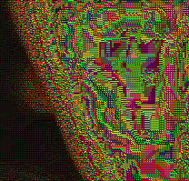
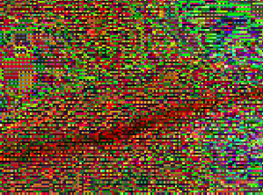

Image Manipulation
Filters
Using code to analyse an image, I extrapolated the data of each pixel in order to create a new image, at 4x scale, where the averages of the colors of each group of four pixels are the same as the color values of the corresponding picture in the original image.
Results on Portrait


This zoom on the back wall shows that low detail produces color blocking, and produces similair results in similair pixels
This zoom on the back wall shows that lighter colors have a more dramatic range of values
This zoom on the hair shows that darker colors are not altered very much. This, and the reason that lighter colors appear much different, is because of how colors work digitally, where black is the lack of all colors and white is the presence.

The more detailed spots on the photo have much more noise once manipulated.
Results on Bat

the crease of the inner ear is the most defined shape in the manipulation |
the back ear had the most cohesive color blocking |
the texture of the fur had a lot of detail and caused a lot of noise in the manipulation |
|---|